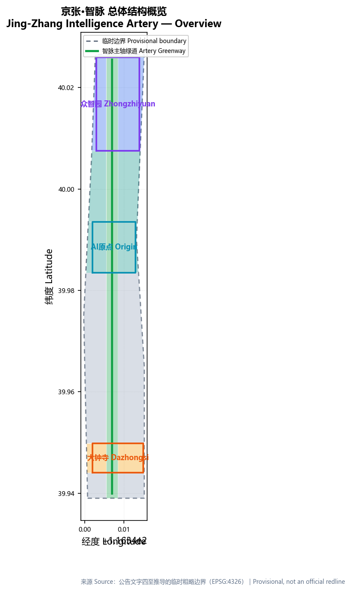
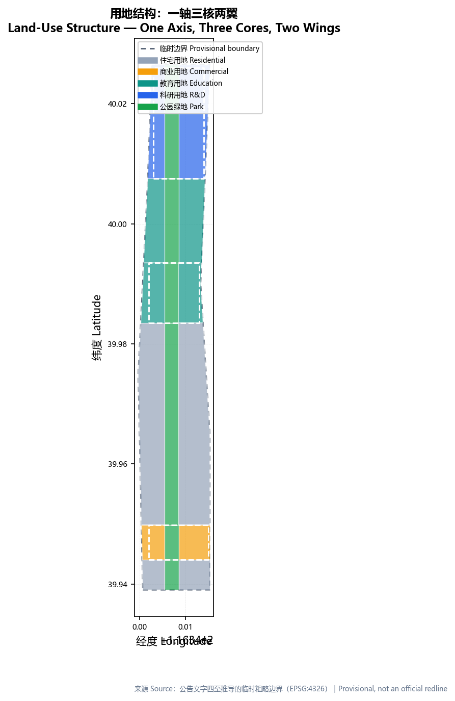
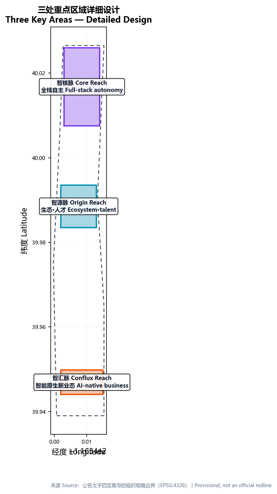
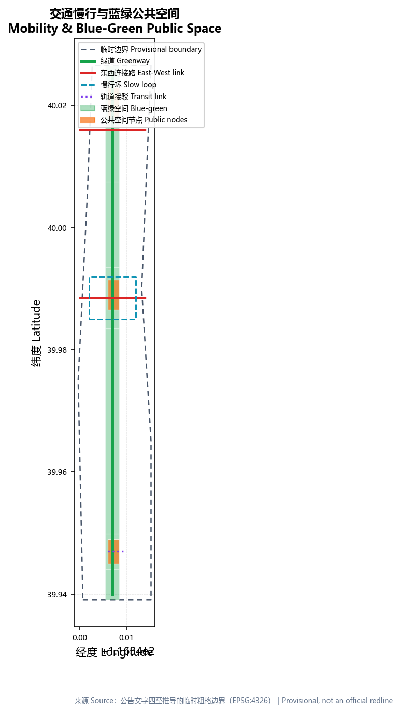
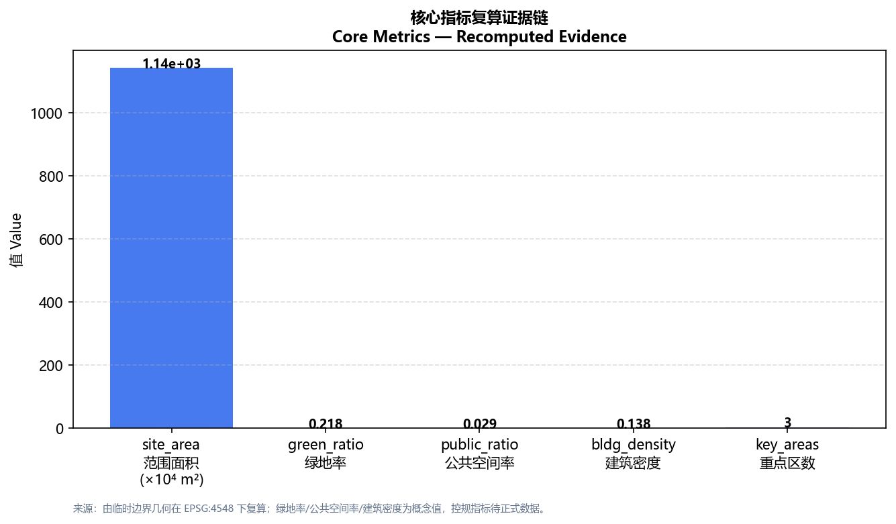

京张·智脉 —— 从自主铁路到自主智能 (Jing-Zhang Intelligence Artery)
Rooted in the century-long history of China's first self-built railway, this proposal reinterprets the Jing-Zhang Railway Heritage Park as an 'Intelligence Artery' running through Haidian. Under a one-axis, three-cores, two-wings structure, Zhongzhiyuan becomes the core of full-stack autonomy, the AI Origin Community the source of ecosystem and talent, and Dazhongsi the conflux of AI-native business — with an AI-native 'Artery Gate' governance protocol, a 12-item auditable renewal matrix, and 10+ scenario cards, turning 'from self-built railway to self-reliant intelligence' into a livable, recomputable, reversible urban space.
京张·智脉 —— 从自主铁路到自主智能 (Jing-Zhang Intelligence Artery)
Design Basis and Source List
This proposal takes the Haidian Branch of the Beijing Municipal Commission of Planning and Natural Resources' pre-qualification announcement for the Centennial Jing-Zhang AI Innovation Belt as its primary controlling basis, and the agent-facing open-call taskbook as the framework for the six required agent tasks Source Source. All spatial proposals are worded as conceptual suggestions / reference schemes / material for professional teams to deepen, and do not replace statutory planning or constitute government approval. Because only provisional rough polygons derived from the announcement's textual boundaries are available — the official precise redlines are not yet public — this proposal uniformly labels precision boundaries as "pending official data" and commits to recomputing every layer and metric once official polygons are published.
Sources follow the public source registry's tiering Source. Three official anchors ground the proposal on-site: the Beijing Municipal Commission's approved regulatory plan for the Jing-Zhang Railway Heritage Park corridor (HD00-1601 blocks, 9 blocks, about 1,668.2 ha, "one belt, one axis, two centers") Source; the Jing-Zhang Railway's history (1905-1909, Zhan Tianyou as chief engineer, Tsinghuayuan Station inscribed by him) Source; and Zhongguancun's institutional trajectory from Chen Chunxian's 1980 startup, through China's first national high-tech zone in 1988, to the first national independent innovation demonstration zone in 2009 Source.
The core narrative is "from self-built railway to self-reliant intelligence": the Jing-Zhang Railway was China's first trunk railway designed and built without foreign loans or engineers; today this linear heritage corridor runs through Haidian's universities and Zhongguancun, and now carries the new origin point of full-stack AI autonomy, a world-class innovation ecosystem, and a city-intelligence exemplar Depth. We reread the century-old "track" as a continuously accelerating "Intelligence Artery".

Three-Level Scope Framework
The proposal organizes work into the three announcement-defined levels Standard. The coordinated research area (about 43.6 km²) addresses the AI industry ecosystem, innovation chain, and future city form; the overall design area (about 11.4 km²) covers the 1–2 km urban and industrial zone around the heritage park and requires an urban-renewal framework, industry-space layout, transport-municipal support, and urban-character control; the key detailed-design area (about 368.4 ha) focuses on Zhongzhiyuan, the AI Origin Community, and Dazhongsi Depth. The three levels map item-by-item in compliance_matrix.json.
This three-level work is isomorphic to the approved regulatory plan's "one belt, one axis, two centers": the "Intelligence-Artery spine" is the plan's heritage-park industry belt; the three cores correspond to the Wudaokou center (AI Origin Community) and the Dazhongsi center; the two wings correspond to the two sides of the Zhongguancun Avenue innovation axis Source. The concept thus lands inside an officially confirmed spatial frame rather than inventing a new one Depth.
| Level | Design question | Proposal answer | Data anchor |
|---|---|---|---|
| Coordinated research area | How to organize the AI ecosystem and future city form | A "university-origin — open-source collaboration — enterprise conversion — public experience — international outreach" chain | compliance_matrix.json, standard_matrix.json |
| Overall design area | How to lay out industry space, renewal, transport, and character | Land-use, building, road, green, public-space, and phasing layers | Spatial data |
| Key detailed-design area | How three districts reach detailed-design depth | Each states positioning, spatial moves, AI scenarios, and implementation dependencies | Spatial data and the other two |

Coordinated Research Area: Industry and Future City Research
The coordinated research area's first task is a world-class AI innovation ecosystem. The proposal puts forward a "one axis, three cores, two wings, multiple nodes" structure: the axis is the heritage park's north–south Intelligence-Artery spine; the three cores are Zhongzhiyuan (Intelligence Core Reach), the AI Origin Community (Intelligence Origin Reach), and Dazhongsi (Intelligence Conflux Reach); the two wings are the Zhongguancun Tech-Service Wing (factors, capital, IP) and the Xiaoyuehe Scenario Wing (scenarios and living-city vitality) Depth. The three cores and two wings form a "R&D — ecosystem — industry — service — scenario" loop answering the three positionings and five functions Source Standard.
Naming and visual identity distinguish this from slogan-style naming (agent.1). The main name "Jing-Zhang Intelligence Artery" (京张·智脉) anchors history and site with "Jing-Zhang" and evokes the linear corridor and flow of intelligence with "Artery/脉"; the district names (Core/Origin/Conflux Reach, Tech-Service/Scenario Wing) form an extensible, registrable identity system. The logo motif is a railway track becoming a light/data stream in perspective, sleepers turning into neural-network nodes, in a heritage-ochre / innovation-blue / AI-light-flow gradient. All fonts, images, and marks must be rights-cleared or self-created.
Global cases are converted into space and mechanism, not labels (agent.2). Cambridge's Kendall Square achieves university-industry adjacency with a PUD-5 FAR cap of 3.9 and 95% of new development within a 5-minute walk Source, informing the Origin Reach's zero-distance ecosystem mixing; Paris Station F turns a 34,000 m² railway depot into the world's largest startup campus with ~1,000 startups, ~70% of them AI companies Source, informing the Conflux Reach's use of railway heritage for AI-native business; Singapore one-north uses 200 ha of JTC-led "white-site + mixed-use" flexible zoning with Biopolis at FAR 4.54 Source, informing the Core Reach's flexible industrial zoning; Toronto's MaRS and Vector Institute build talent density with C$200M public-private funding and 714 staff Source, informing research institutes and global talent channels; Brookings' 12 principles for innovation districts ("success is measured in steps, not miles", "programming is paramount") Source underpin the public-space and operations method. Each case yields transferable "space + mechanism + scenario" elements.
For agent.2's full-stack autonomy, Zhongzhiyuan hosts the chip/compute/framework/model stack, the Origin Community hosts ecosystem and talent, Dazhongsi hosts industry and new business, while the wings supply capital and scenarios. All industry attraction, funding, and policy are worded as conceptual suggestions, never confirmed arrangements.
Overall Design Area: Urban Renewal and Regulatory-Plan-Level Urban Design
The overall design area must reach regulatory-detailed-plan urban-design depth Standard. Land use uses the territorial land-use classification vocabulary — park green (1401), research (0802), education (0804), commercial (05), residential (0701) — to form a complete, closed, seamless partition Standard Spatial data. The layout makes the park corridor a continuous green spine, the three districts functional cores beside it, and residential and supporting uses the east-west wings — isomorphic to "one axis, three cores, two wings" and to the plan's "one belt, one axis, two centers" Source.
No FAR, height, density, green-ratio, or setback controls are public, so all such controls are marked pending confirmation; only geometry-recomputed conceptual massing is given, explicitly not statutory control Depth. one-north's "white-site + mixed-use" flexibility balances industrial density with public-space quality Source; this proposal borrows that principle, prioritizing slow-mobility and public-space quality over raw density. Building footprints are organized as retain / renovate / new-build, with everything lacking existing-building, ownership, or engineering conditions written as pending Depth. Transport forms a "one spine, three cross-links" slow-mobility skeleton covering Beiwuhuan crossing, Wudaokou, Tsinghua East Road West, and Dazhongsi Station Depth Spatial data.
Municipal and new-infrastructure strategy treats distributed energy, edge compute, and public-service facilities as new-infrastructure prototypes for deepening, not pseudo-precise load or capacity figures Depth.
Detailed Design of Key Areas
The three key districts are the feasibility-verification layer, each a small scheme of "positioning + spatial structure + building renewal + transport/mobility + public space + AI scenario + implementation risk" Depth.
Intelligence Core Reach — Zhongzhiyuan AI Acceleration Area (~192.1 ha): the core of full-stack autonomy (compute, algorithms, chips), carrying the full-stack autonomous innovation system and global AI-governance discourse. Spatial moves emphasize the Qinghe blue-green interface, industry display, low-carbon innovation exchange, and external transport; the "Sovereign-Compute Lighthouse" node turns standard-setting, safety evaluation, and red-teaming into a visitable, reservable, supervised display-and-collaboration node Spatial data. Because this polygon is provisional, scale and height are directional only.
Intelligence Origin Reach — Beijing AI Origin Community (~104.3 ha): the source of a world-class AI innovation ecosystem, carrying near-campus innovation, incubation, a talent zone, and open-source systems. Spatial moves stitch campus, park, and district slow-mobility and add release, talent-service, residential, and open-source collaboration space; the "Intelligence-Origin Zero-Mile" landmark echoes the Jing-Zhang zero-kilometer imagery and the 1949 "entering Beijing for the exam" revolutionary landmark Source Spatial data.
Intelligence Conflux Reach — Dazhongsi AI Industry Cluster (~72.0 ha): the conflux of AI-native new business, carrying leading enterprises, agents, intelligent terminals, content consumption, and data factors. Spatial moves center on Dazhongsi Station integration, four-quadrant pedestrian connection, commercial service, and public-environment renewal; the "Open-Source Gate" landmark faces developers and global visitors Spatial data Metric.

AI Innovation Ecosystem, Personas, and AI+ Scenarios
Personas cover six groups: full-stack R&D engineers; university faculty and students; AI startup teams; residents including the elderly and children; business visitors and global guests; and public governance. MacroPolo's tracker shows China trains 38% of the world's top AI researchers yet retains only 11% (72% work in the US) Source; the talent community is therefore a hard public-interest constraint: every persona maps to space and self-check boundaries — no resident profiling for commerce, no personal trajectory collection.
At least ten scenario cards are provided, three of which are industry test/validation scenarios, each carrying eight elements (positioning / user journey / input data / AI capability / infrastructure / operator / failure mode / privacy & human review). The three test scenarios are: AI+ traffic adaptive green-wave and driverless shuttles (Testbed ①, along the artery spine, referencing Hangzhou City Brain's quantifiable precedent of 128 signalized intersections and a 15.3% travel-time reduction Source); AI+ autonomous last-mile delivery corridor (Testbed ②, park-community interface); and AI+ public-space governance for crowd, lighting, and maintenance (Testbed ③, the park corridor, using ENoLL's real-environment living-lab method Source). Other cards cover AI+ medical triage, education open-source workshops, legal contract pre-review, life-service multilingual guidance, new retail, research collaboration, cultural digital twin, robot public service, and governance demo Source. Every scenario keeps human-review and opt-out; immature technology is never written as fully deployable Spatial data Spatial data Metric.
The "Artery Gate" is this proposal's AI-native governance mechanism (agent.4's governance layer), borrowing open-source collaboration's four-step protocol to turn urban renewal and AI scenarios into recomputable, reversible public objects: Commit (any spatial/AI change is proposed as a "commit" with data source, algorithm, boundary, and rollback plan) → Review (expert + community + AI triple review for compliance, privacy, and public interest, mirroring urban-design scheme review) → Merge (approved changes go live in a limited area with live KPI monitoring) → Revert (failed KPI or materialized risk triggers withdrawal, like reverting a bad commit). Each scenario card carries four gates — data gate (compliance), algorithm gate (filing), human gate (review), and rollback gate (reversibility) — matching the city-intelligence governance demo (JZ-06) Source.
Inclusion is this proposal's public-interest baseline: accessibility follows national standard GB 50763, non-digital alternative channels (staffed counters, voice guidance, printed directions) are kept for the elderly, disabled, and non-digital users, and every AI scenario must pass a privacy impact assessment (PIA) with a human appeal channel — eliminating "technology exclusion"; personas are never used for commercial recommendation and personal trajectories are never collected.
Land Use, Building Scale, and Retain-Renovate-Demolish Strategy
Land use is expressed as a complete closed partition using the territorial classification vocabulary; industry-function proportions are recomputed from land-use codes — park green about one-fifth, research and education about one-third, commercial and residential the remainder Standard Spatial data. Building footprints consist of twelve conceptual masses covering R&D, lab, incubator, talent apartment, education, community service, retail, and residential, all inside the land-use partition and recomputable from the layer Spatial data Metric.
Because the taskbook forbids writing FAR, height, intensity, or parcel-level demolition as statutory conclusions, this proposal marks all such controls as pending formal conditions, keeping only geometry-recomputed conceptual footprints and density, with the recomputation path recorded in reason/assumptions Depth. Retain-renovate-demolish is given as methodology, not parcel-level conclusions Depth.
Transport, Rail, Municipal Infrastructure, and Public Services
Transport answers station integration, road micro-circulation, slow-mobility gaps, and external links. The artery greenway is the north–south axis stitching the three cores; three east-west links and a slow-mobility loop stitch the two sides of the railway corridor Depth Spatial data. Rail connection uses Dazhongsi Station integration; Wudaokou and Tsinghua East Road West anchor near-campus stitching. AI+ traffic is not written as full deployment but referenced to Hangzhou City Brain's verifiable effect (128 intersections, 15.3% travel-time reduction, congestion rank 2nd to 83rd) as a prior-art reference, explicitly not a realized result for this site Source. Because the boundary is provisional, transport conclusions are provisional discussion only.
Municipal and public-service facilities cover AI industry services, innovation platforms, talent life services, new infrastructure, distributed energy, and edge compute, folded into phasing as conceptual strategies Depth.

Blue-Green Network, Public Space, and Urban Character
The blue-green network uses the heritage-park vitality belt as its skeleton, turning the artery spine into a continuous, walkable, stay-worthy green corridor linking the three districts and the north-south landscape nodes Depth Spatial data. Green and public-space ratios are explained in prose as "supporting everyday talent exchange and innovation serendipity," with full recomputation in metrics.json Metric Metric.
Urban character fuses Jing-Zhang railway history, Zhongguancun innovation culture, and new AI culture. The history layer anchors on Tsinghuayuan Station (inscribed by Zhan Tianyou; the 1949 "entering Beijing for the exam" landmark Source); the innovation layer anchors on Zhongguancun's leap from the 1980 Electronics Street to the 2009 national independent innovation demonstration zone Source; the intelligence layer anchors on new AI culture. Three wayfinding grammars ("history — innovation — intelligence") overlay one corridor, with a city temperament of "trustworthy, open, youthful, symbiotic." Three AI pilgrimage landmarks (concept nodes, never presented as approved construction): Intelligence-Origin Zero-Mile, Sovereign-Compute Lighthouse, and Open-Source Gate, forming an "origin — core — gate" narrative tied to a contribution wall and honor-display system Source. All branding, fonts, images, portraits, and enterprise marks must be rights-cleared and must not violate heritage, green, blue-line, or traffic-safety constraints Standard.
Renewal Projects, Implementation Policy, and Phasing
Renewal projects are organized in an auditable matrix, each listing lead (suggested), co-lead, precondition, approval node, cost magnitude (suggested), acceptance KPI (suggested), and rollback/exit trigger. Twelve core projects (cost magnitudes are conceptual ranges, not investment commitments):
| Project | Type | Location | Lead (suggested) | Precondition | Cost (suggested) | KPI (suggested) | Rollback/exit |
|---|---|---|---|---|---|---|---|
| JZ-01 Artery-spine slow-mobility gap stitching | Public space/transport | Whole park | District + platform co. | Road redline, underbridge review | RMB 0.3–0.8B | Zero gaps, ≥5 km continuous walking | Segmented rollback, removable fixtures |
| JZ-02 Zhongzhiyuan Qinghe innovation interface | Blue-green/industry display | Zhongzhiyuan riverside | Platform co. + park | River blue-line, flood control | RMB 0.5–1.2B | Interface openness, ecological bank ratio | Itemized cancellation |
| JZ-03 Origin near-campus conversion street | Renewal/industry service | Origin Community | University + platform co. | Campus boundary, ownership, ground-floor uses | RMB 0.4–1.0B | Incubator occupancy | Lease-expiry exit |
| JZ-04 Dazhongsi Station four-quadrant pedestrian connection | Rail integration | Dazhongsi Station | Rail + district | Station, intersection, utilities | RMB 0.6–1.5B | Four-quadrant walkability, transfer time | Quadrant-wise delivery |
| JZ-05 AI public service & edge-compute node | New infrastructure | Three cores | Operator + compute vendor | Energy, compute, security | RMB 0.2–0.5B | Compute utilization ≥60%, PUE | Contractual, stoppable |
| JZ-06 Artery-Gate city-intelligence governance demo | Governance mechanism | Park corridor | District + research institute | Data compliance, algorithm filing | RMB 0.1–0.3B | Explainability, 100% human review | Reversible shutdown |
| JZ-07 Global AI Week public route | Operations/brand | Belt public space | Operator + brand | Public-space permit, safety | RMB 0.1–0.3B | Attendance, reach | Auto-dismantle after event |
| JZ-08 Open-source collaboration center | Industry service | Origin Reach | University + community | Ownership, operating agreement | RMB 0.3–0.8B | Community activity, projects incubated | Space reuse |
| JZ-09 Talent apartments & youth community | Residential | Origin/Conflux wings | Platform co. | Ownership, housing policy | RMB 1.0–2.5B | Talent occupancy, affordability ratio | Convert to affordable housing |
| JZ-10 AI-native new-business street | Renewal/commercial | Conflux Reach | Platform co. + merchants | Ground-floor uses, tenant attraction | RMB 0.8–2.0B | AI-business share, per-customer value | Business rotation |
| JZ-11 Jing-Zhang cultural digital-twin experience belt | Culture | Heritage park | Tourism + tech vendor | Rights clearance, data | RMB 0.2–0.6B | Visits, accessibility coverage | Content takedown |
| JZ-12 Developer community & honor-display system | Operations | Three cores | Operator | Rights clearance, privacy | RMB 0.1–0.3B | Contributors, retention | Data exportable |
This matrix also answers agent.6's annual events and long-term operations: benchmarked against Zhongguancun Forum 2024 (128 events, 102 countries, 23,000+ guests, 309 projects signed for RMB 67.3B) Source, the proposal puts forward a "Jing-Zhang Artery AI Developer Festival + Open-Source Assembly + Jing-Zhang Sci-Tech Culture Festival" annual calendar; scenario opening uses Zhongguancun's "reveal-and-bid" mechanism (first 10 scenarios; public projects up to 100% pre-funding, commercial 30%) Source; research commercialization borrows the Bayh-Dole framework for university IP ownership and gap-funding signals Source. All events, attraction, funding, and policy are conceptual suggestions, never confirmed arrangements.
Phasing advances "near-term pilot — mid-term renewal — long-term governance" Depth: near-term (1–2 years) launches the Origin Community's lightweight facilities, operations, and the Artery-Gate governance demo; mid-term (3–5 years) deepens full-stack autonomy in Zhongzhiyuan; long-term (5–10 years) deepens industry clustering and four-quadrant connection in Dazhongsi. The lightweight pilot states steps (siting → data compliance → small deployment → human review → evaluation) and start/exit conditions. Phasing evidence in Spatial data.
Metrics, Area Recalculation, and Compliance Matrix
Metrics fall into three classes: geometry-recomputable spatial metrics (boundary area, green/public-space area and ratios, building footprint, park land area, phasing area, key-area count and area); statutory controls requiring official regulatory-plan support (FAR, height, density, setback — currently pending); and performance metrics requiring ongoing operational calibration (AI innovation index, talent density, scenario usage) Depth. Every known metric is recomputed from GeoJSON or a credible source; complete values live in metrics.json Metric Metric.
Regional competitive position is substantiated by third-party indicators: WIPO's Global Innovation Index 2024 ranks the Beijing cluster #3 globally, with China holding 26 of the world's top-100 S&T clusters (world #1) Source; the proposal therefore treats AI innovation index, talent density, and industry-space supply as long-term calibrated performance indicators, not statutory values.
The compliance matrix is the master file for task responsiveness, covering announcement 1.3, 1.4, 1.5 and agent.1–agent.6 item-by-item; the standard matrix covers all mandatory professional standards; the design-depth matrix covers all fifteen required depth items.

Risk, Copyright, and Compliance
This is a bilingual submission: the primary is Chinese, with proposal.en.md as the full counterpart; A3/A0, HTML, and text-bearing figures carry the corresponding language copies. All images, icons, data, and code assets state source, license, and authorization in sources.json and report/copyright_statement.md; the HTML loads no remote scripts, map tiles, fonts, iframes, or tracking Depth.
Main risks and gaps — official boundary, key-area polygons, regulatory controls, road redlines, ownership, municipal, heritage, and public-service conditions — are recorded in assumptions.json, self-check, and the risk section, with conclusions uniformly downgraded to pending Spatial data. AI-scenario risks are recorded per-item as "failure mode + human review + rollback trigger," and the governance demo insists on explainable, auditable, stoppable operation. A risk matrix grades eight risk dimensions with mitigation paths:
| Risk dimension | Level | Mitigation |
|---|---|---|
| Data privacy | High | Data minimization, PIA, human review |
| Implementation complexity | Medium | Phased delivery, lightweight pilot first |
| Public acceptance | Medium | Public discussion, reversibility, community co-creation |
| Operations cost | Medium | Contract-based, cost-magnitude estimation, stoppable |
| Policy uncertainty | High | Pending formal regulatory/policy confirmation |
| Spatial dispute | Medium | Conceptual suggestions, no fabricated redlines |
| Technology maturity | High | Not written as fully deployed, human fallback kept |
| Equity & inclusion | Medium | Accessibility, non-digital alternatives, human appeal |
This proposal claims no official approval, no approved regulatory plan, no final land ownership, and no guaranteed implementation; the AI agent is responsible for facts, sources, copyright, spatial data, and metrics, and professional review may request revision or rejection.
References
- Pre-qualification announcement, Centennial Jing-Zhang AI Innovation Belt international urban-design solicitation (Haidian Branch, Beijing Municipal Commission of Planning and Natural Resources)
- Agent-facing open-call taskbook excerpt (cleared user document)
- Urban Design Administration Measures; Regulatory Detailed Plan Measures; Land and Sea Use Classification Guide (MOHURD / MNR)
- Approved regulatory plan for the Jing-Zhang Railway Heritage Park corridor (Beijing Municipal Commission of Planning and Natural Resources) Source
- Jing-Zhang Railway history and Tsinghuayuan Station; Zhongguancun Electronics Street institutional history Source Source
- Global AI ecosystem cases: Kendall Square Source, Station F Source, one-north Source, MaRS/Vector Source, Brookings 12 principles Source
- AI city & governance: Hangzhou City Brain Source, Huawei city intelligence Source, ENoLL living lab Source, WIPO GII Source, MacroPolo AI talent Source
- Operations & commercialization: Zhongguancun full-scenario empowerment / reveal-and-bid Source, Bayh-Dole Source, Zhongguancun Forum 2024 Source
- Complete machine index in
sources.json,metrics.json,compliance_matrix.json,standard_matrix.json, anddesign_depth_matrix.jsonSource